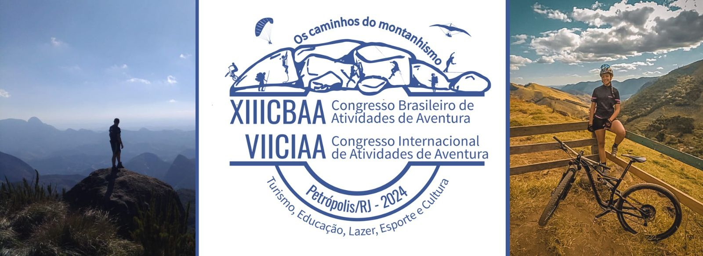
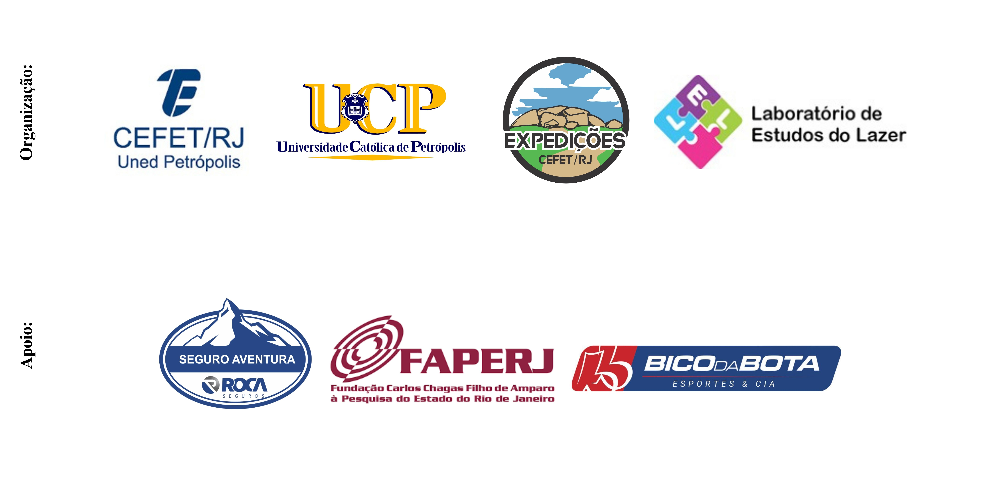
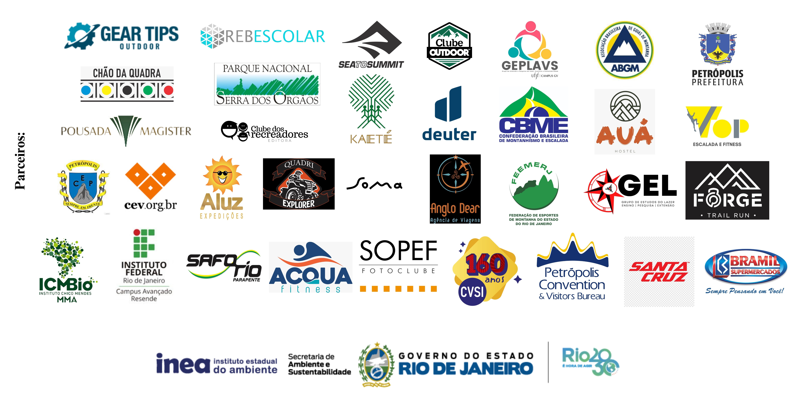

XIII Congresso Brasileiro de Atividades de Aventura (CBAA)
VII Congresso Internacional de Atividades de Aventura (CIAA)

Página inicial
Histórico
Anais
Programação
Submissões
Inscrições no evento
Inscrições em minicursos / atividades vivenciais
Concurso de fotos
Atividades Pré-evento
Atividades Pós-evento
Fotos do evento
Contato
Anais XIII CBAA / VII CIAA
Introdução
Programação
Concurso de fotos
Trabalhos completos eixo 1:
A CURRICULARIZAÇÃO DO ESPORTE ORIENTAÇÃO NO ENSINO FUNDAMENTAL II
A PRODUÇÃO DO CONHECIMENTO SOBRE O SKATE EM PERIÓDICOS CIENTÍFICOS DA EDUCAÇÃO FÍSICA
O CIRCO A AVENTURA E SUAS ARTES UMA PROPOSTA PEDAGÓGICA NA ESCOLA PÚBLICA DO MUNICÍPIO DE MÃE DO RIOPA
O MERGULHO ENQUANTO PRÁTICA CORPORAL DE AVENTURA DE AVENTURA PARA ALÉM DA BASE NACIONAL COMUM CURRICULAR EM MELGACO PA
OS PROFESSORES ESTÃO PREPARADOS PARA ENSINAR AVENTURA NA EDUCAÇÃO FÍSICA ESCOLAR PANORAMA DA REALIDADE DO ENSINO FUNDAMENTAL I EM MARINGÁ-PR
BRINCADEIRAS NA EDUCAÇÃO INFANTIL UM RELATO DE EXPERIÊNCIA SOBRE AVENTURAS
RELATO DE EXPERIÊNCIA A IMPORTÂNCIA DA EDUCAÇÃO TURÍSTICA PARA A FORMAÇÃO TÉCNICA DE GUIA DE TURISMO DO IFRJ RESENDE
CLUBE DA CRIANÇA AVENTUREIRA UMA PROPOSTA EXTENSIONISTA DE ATIVIDADES DE AVENTURA NA EDUCAÇÃO INFANTIL
PRODUÇÃO ACADÊMICA EM AVENTURA ANÁLISE DOS ANAIS DO CBAA E CIAA
A (NÃO) EXISTÊNCIA DA AVENTURA NA FORMAÇÃO INICIAL EM LICENCIATURA EM EDUCAÇÃO FÍSICA NO ESPÍRITO SANTO
ATIVIDADES DE AVENTURA COM CRIANÇAS BEM PEQUENAS NO ESPAÇO DA EDUCAÇÃO INFANTIL
SALA DE PSICOMOTRICIDADE PARA AS PRÁTICAS CORPORAIS DE AVENTURA NOS ANOS INICIAIS UM RELATO DE UMA ESCOLA EM MANAUS
PRÁTICAS DE AVENTURA E AS POSSÍVEIS AÇÕES DE SAÚDE NO COTIDIANO DO INSTITUTO FEDERAL DO RIO DE JANEIRO
BAIXADA FLUMINENSE, TRILHA E EDUCAÇÃO PEGADAS DE UM GRUPO NAS TRILHAS DA CONSTRUÇÃO DO SENTIMENTO DE PERTENCIMENTO
DESAFIOS E POSSIBILIDADES DO ENSINO SLACKLINE ENQUANTO CONTEÚDO DA EDUCAÇÃO FÍSICA ESCOLAR
CORPO E AMBIENTE RELAÇÕES QUE PERMEIAM A PRÁXIS DAS PRÁTICAS CORPORAIS DE AVENTURA EM GOIÂNIA
QUATIS EM ORIENTAÇÃO NAS TRILHAS DAS UNIDADES DE CONSERVAÇÃO RUMO À EDUCAÇÃO AMBIENTAL COM O IFRJ
EXPERIÊNCIAS DE SURFE NA PRÁTICA PEDAGÓGICA COMO POSSIBILIDADE NA EDUCAÇÃO FÍSICA ESCOLAR
PRÁTICAS CORPORAIS DE AVENTURAS E OS TEMAS TRANSVERSAIS PROPOSTAS DE AULAS PARA EDUCAÇÃO FÍSICA ESCOLAR
O ESPORTE ORIENTAÇÃO COMO CONTEÚDO DA EDUCAÇÃO FÍSICA ESCOLAR UMA ABORDAGEM ATRAVÉS DAS DIMENSÕES DO CONTEÚDO
AS PRÁTICAS DE AVENTURA NAS AULAS DE EDUCAÇÃO FÍSICA NO ENSINO MÉDIO
FESTIVAL DE AVENTURA UMA EXPERIÊNCIA NO ENSINO FUNDAMENTAL II
EXPLORANDO AS “MICROAVENTURAS” E AS PCAs NA ESCOLA
AS AVENTURAS DE “FAZ DE CONTA” A TEMATIZAÇÃO DAS PRÁTICAS CORPORAIS DE AVENTURA NOS ANOS INICIAIS DO ENSINO FUNDAMENTAL SOB A ÓTICA DAS CRIANÇAS
PRÁTICAS DE AVENTURA E JOGOS DE VERTIGEM EXPERIÊNCIAS DE EQUILIBRAÇÃO PARA OS ANOS INICIAIS DO ENSINO FUNDAMENTAL
GUARDIÕES KAETÉ UMA PROPOSTA DE EDUCAÇÃO PELA NATUREZA
Trabalhos completos eixo 2:
SLACKLINE NA UNIVERSIDADE ESPAÇO, AVENTURA E SOCIABILIDADE
MOTIVAÇÃO PARA A CORRIDA EM TRILHA
MOTIVOS PARA A PRÁTICA DO MONTANHISMO E OS BENEFÍCIOS PARA SEUS PRATICANTES
A PERCEPÇÃO DAS MULHERES SOBRE OS ESPORTES DE AVENTURA
PERFIL DA PREPARAÇÃO FÍSICA DE ATLETAS MULHERES DE CORRIDA DE AVENTURA
Trabalhos completos eixo 3:
LAZER, CULTURA E NATUREZA NAS PRAIAS DE UBATUBA – SP
TCHIBUM! O LAZER BALNEAR NA REGIÃO METROPOLITANA DE BELÉM DO PARÁ - COM VISTAS A UMA CARTOGRAFIA TURISTICA E SUSTENTAVEL
A AVENTURA DO TURISMO CIENTÍFICO NAS EXPEDIÇÕES DO CEFETRJ EXPERIÊNCIAS NA TRILHA DO MORRO MEU CASTELO, PETRÓPOLIS, REGIÃO SERRANA DO RIO DE JANEIRO
TURISMO DE AVENTURA EM CANINDÉ-CE MAPEAMENTO DOS ESPAÇOS PARA A PRÁTICA DE AVENTURA NO MUNICÍPIO
TURISMO DE AVENTURA EM PETRÓPOLIS CONSIDERAÇÕES SOBRE OS DESAFIOS E OPORTUNIDADES
GEORROTEIRO PARA A TRILHA DO CASTELINHO - PETRÓPOLIS (RJ)
Trabalhos completos eixo 4:
PROJETO NATUREZA DE CRIANÇA INCLUSÃO E AVENTURA
PROPOSTA DE ATIVIDADES NA NATUREZA PARA PESSOAS COM DEFICIÊNCIA VISUAL
INCLUSÃO NA EDUCAÇÃO FÍSICA ESCOLAR EXPERIÊNCIAS COM O ENSINO APRENDIZAGEM DAS PRÁTICAS CORPORAIS DE AVENTURA
Trabalhos completos eixo 5:
PROTÓTIPO DE PAINEL PARA ATIVIDADES DE ESCALADA A PARTIR DE DCLT (DOWELED CROSS LAMINATED TIMBER) UM RELATO DE EXPERIÊNCIA
ECODESIGN E A BIOMIMÉTICA DE PRODUTOS NAS PRÁTICAS CORPORAIS DE AVENTURA COM MATERIAIS SUSTENTÁVEIS DA FLORESTA
ANÁLISE DA QUALIDADE AMBIENTAL E DO POTENCIAL TURÍSTICO DA GEOTRILHA FAROL DA LAJINHA NO PROJETO GEOPARQUE COSTÕES E LAGUNAS DO RIO DE JANEIRO
A IMPORTÂNCIA DOS TRABALHADORES DO LAZER DE AVENTURA NA CONSERVAÇÃO E SAÚDE SOCIOAMBIENTAL O EXEMPLO DE BROTAS, SP
Trabalhos completos eixo 6:
INOVAÇÕES E TECNOLOGIAS ASSOCIADAS ÀS ATIVIDADES DE AVENTURA
ATIVIDADES DE AVENTURA ANÁLISE CONCEITUAL E A PRODUÇÃO DO CONHECIMENTO SOB A PERSPECTIVA DAS INTELIGÊNCIAS ARTIFICIAIS
ANÁLISE BIBLIOMÉTRICA NA WEB OF SCIENCE (2014-2024) COM OS DESCRITORES AVENTURA E LAZER
Trabalhos completos eixo 7:
GESTÃO DE RISCOS EM ESPORTES VERTICAIS PROPOSTA DE UMA MODELO DE RELATÓRIO PARA ABERTURA DE PONTOS DE RAPEL
O ESPORTE DE AVENTURA NA AGENDA RETÓRICA PRESIDENCIAL BRASILEIRA (2004-2022)
SKATE DAS MENINAS O DESAFIO DA GESTÃO NO ESPORTE DE AVENTURA EM PROMOVER A INCLUSÃO DE GÊNERO
 